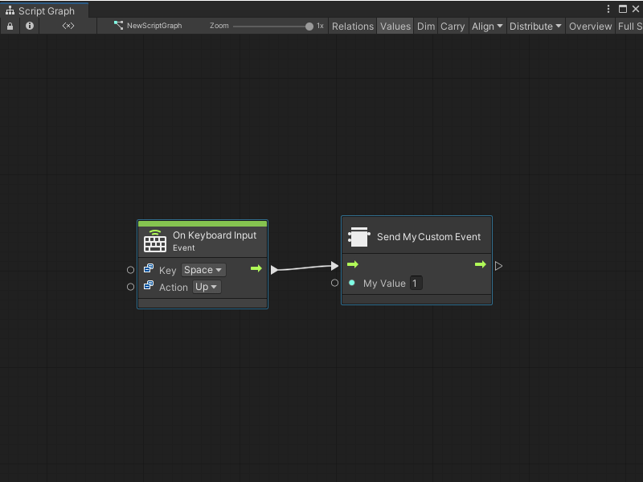

Create a Custom Scripting Event Sender node¶
[!NOTE] Before you create a Custom Scripting Event Sender node, you must create a Custom Scripting Event node. [!includetasks-note-end].
After you create a Custom Scripting Event node, you can create a Custom Scripting Event Sender node to trigger the Event from any other Script Graph in the same scene, or the same Script Graph.
You can also choose to create a separate script to trigger the Event from code. For more information, see Trigger a Custom Scripting Event from a C# script.
Create a node and add it to the fuzzy finder¶
To create a Custom Scripting Event Sender node and add it to the fuzzy finder:
[!includeopen-project-window]
[!includeright-click-project]
[!includecreate-c-script-project]
Enter a name, such as
SendMyEventNode, for the new script file.Press Enter.
[!includeopen-new-external-code]
In your external editor, copy and paste the following code into the C# script:
using Unity.VisualScripting; using UnityEngine; //Custom node to send the Event [UnitTitle("Send My Custom Event")] [UnitCategory("Events\\MyEvents")]//Setting the path to find the node in the fuzzy finder as Events > My Events. public class SendMyEvent : Unit { [DoNotSerialize]// Mandatory attribute, to make sure we don’t serialize data that should never be serialized. [PortLabelHidden]// Hide the port label, as we normally hide the label for default Input and Output triggers. public ControlInput inputTrigger { get; private set; } [DoNotSerialize] public ValueInput myValue; [DoNotSerialize] [PortLabelHidden]// Hide the port label, as we normally hide the label for default Input and Output triggers. public ControlOutput outputTrigger { get; private set; } protected override void Definition() { inputTrigger = ControlInput(nameof(inputTrigger), Trigger); myValue = ValueInput<int>(nameof(myValue),1); outputTrigger = ControlOutput(nameof(outputTrigger)); Succession(inputTrigger, outputTrigger); } //Send the Event MyCustomEvent with the integer value from the ValueInput port myValueA. private ControlOutput Trigger(Flow flow) { EventBus.Trigger(EventNames.MyCustomEvent, flow.GetValue<int>(myValue)); return outputTrigger; } }
[!includesave-script]
[!includereturn-unity]
[!includeregen-node-library]
After you regenerate your Node Library, the Custom Scripting Event Sender node appears in the fuzzy finder. If you didn’t change the [UnitCategory] or [UnitTitle] from the sample code, then the fuzzy finder displays the node under Events > MyEvents, as the Send My Custom Event node. For more information on the fuzzy finder, see The interface.
Trigger your Custom Scripting Event node¶
You might use your Send My Custom Event node to trigger your Event based on keyboard input:
Open a Script Graph where you want to add the new node. This can be the same or a different Script Graph from the one that contains your Custom Scripting Event node.
[!includeopen-fuzzy-finder].
Go to Events > Input.
Select the On Keyboard Input node to add it to the graph.
Right-click again in the Graph Editor to open the fuzzy finder.
Go to Events > My Events.
Select your Send My Custom Event node to add it to the graph.
Connect the On Keyboard Input node’s Trigger output port to the Send My Custom Event node’s Input Trigger input port, as shown in the following image.

Select Play from the Unity Editor’s Toolbar to enter Play mode.
Press and release the Spacebar in the Game view.
The Custom Scripting Event Sender node triggers the Custom Scripting Event in your graph and sends the Event the value from My Value A.
Next steps¶
After you create a Custom Scripting Event Sender node, you can create a script to trigger your Event from code or create a script to listen to your Event.